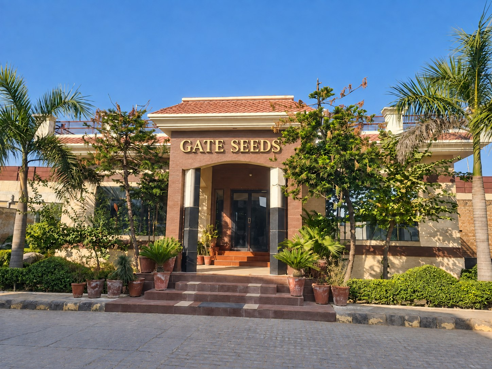

Home/About
About GateSeedsReliable genetics you can build a season on.
Over two decades of practical farming insight and targeted innovation, rooted in Maur Mandi, Bathinda.

Seed You Don't Have to Think Twice About
Rooted on the Rampura-Talwandi road in Maur Mandi, Gate Seeds has spent over two decades building a dependable crop portfolio focused on purity, presentation, and field performance. We bridge practical farming insight with targeted innovation to deliver seeds that protect farmer margins and drive reliable yields.
Today, our portfolio features proven, high-yielding wheat and paddy varieties alongside proprietary research developments. This includes standout performers like GATE-71 wheat and Kranti — our exclusive, internally developed paddy variety engineered for peak productivity. At Gate Seeds, we don’t just supply seed; we provide reliable genetics you can build a season on.
Four Things We Don't Compromise On
Our Own Variety Development
GATE-71 wheat and Kranti paddy combine practical farming insight with proprietary research and targeted innovation.
Wheat & Paddy Portfolio
Proven, high-yielding wheat and paddy varieties selected to support dependable field performance and reliable yields.
Purity & Presentation
Seed purity and clear product presentation sit at the heart of our portfolio, supported by Seed Boost™ and Secure Shield™ quality signatures.
Farmer Margins Matter
We focus on dependable genetics and field performance to help protect farmer margins, season after season.
Two trademarks. One quality language.
Seed Boost™ and Secure Shield™ are supporting GateSeeds quality marks, each with a distinct role within our product family.
- Seed Boost™ identifies the GateSeeds seed technology signature.
- Secure Shield™ identifies the GateSeeds quality protection signature.
- Both appear as supporting marks beneath the GateSeeds master brand.